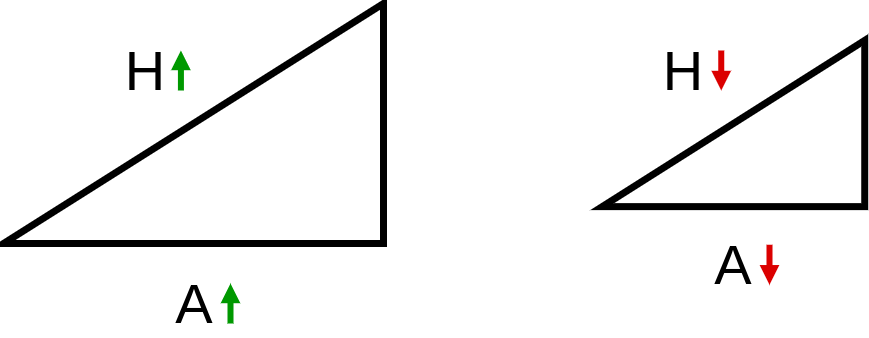
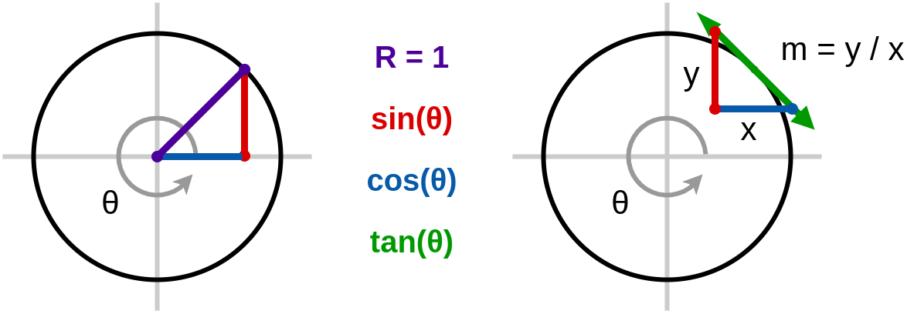
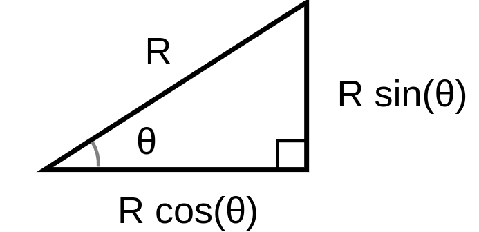
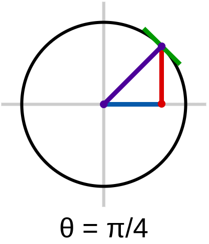
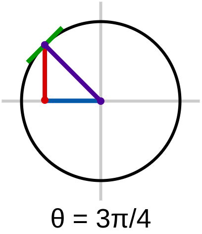
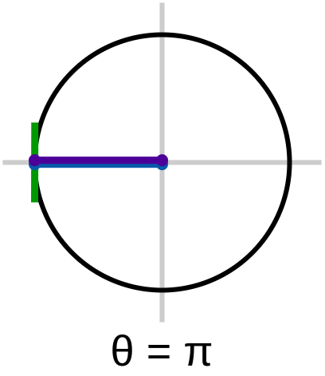
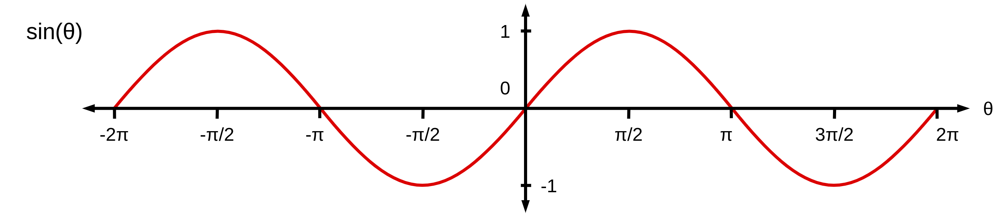
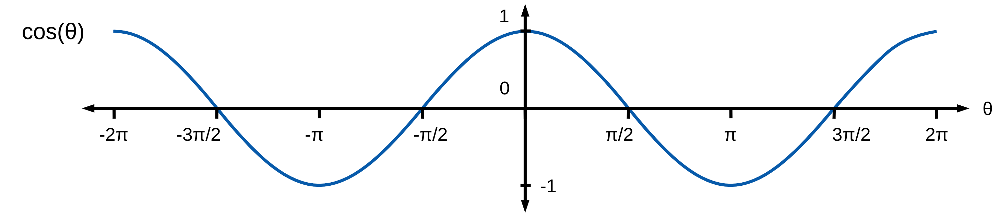
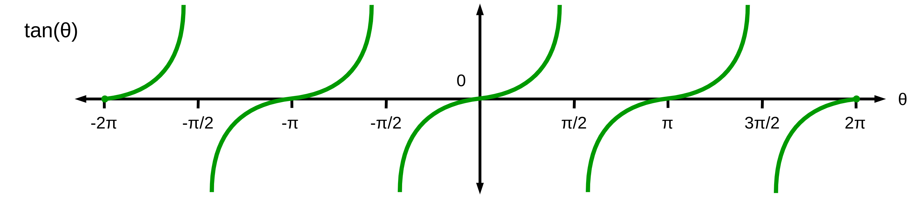

| 0 | 1 | 2 | 3 | 4 | 5 | 6 | 7 | 8 | ⊞ | INFO | |
| ◼ | Θ | ◣ | ∿ | _ | _ | _ | ? |
| 0 | 1 | 2 | 3 | 4 | 5 | 6 | 7 | 8 | ⊞ | INFO | |
| ◼ | Θ | ◣ | ∿ | _ | _ | _ | ? |

H > A , H > B ƒ(θ) = sin(θ) , ƒ(θ) = cos(θ) , ƒ(θ) = tan(θ) |
 
|
|
|
||||
|
|
||||
|
|

|
sin(θ) = B/H → B = Hsin(θ)
cos(θ) = A/H → A = Bsin(θ) tan(θ) = B/A → B = Atan(θ) A = Hcos(θ) = Hsin(φ) = Btan(φ) = B/tan(θ) B = Hsin(θ) = Hcos(φ) = Atan(θ) = A/tan(φ) H = A/cos(θ) = B/sin(θ) = A/sin(φ) = B/cos(φ) |
|
 |
 |
 sin(θ) = 0
sin(θ) = 0
cos(θ) = 1 tan(θ) = 1/0 = ∞ |
 sin(θ) = √ 2 / 2cos(θ) = √ 2 / 2 tan(θ) = 1 |
 sin(θ) = 1
sin(θ) = 1
cos(θ) = 0 tan(θ) = 0/1 = 0 |
 sin(θ) = √ 2 / 2cos(θ) = -√ 2 / 2 tan(θ) = -1 |
 sin(θ) = 0cos(θ) = -1 tan(θ) = -1/0 = -∞ |



|
θ =
|
sin(θ) = 0.0000000
cos(θ) = 0.0000000 tan(θ) = 0.0000000 |
| θ | 0 | π ⁄ 6 | π ⁄ 4 | π ⁄ 3 | π ⁄ 2 | π |
| sin(θ) | 0 | √ 1 / 2 = 1 / 2 | √ 2 / 2 | √ 3 / 2 | √ 4 / 2 = 1 | 0 |
| cos(θ) | √ 4 / 2 = 1 | √ 3 / 2 | √ 2 / 2 | √ 1 / 2 = 1 / 2 | 0 | -1 |
| tan(θ) | 0 / 1 = 0 | 1 / √ 3 | 1 | √ 3 | 1 / 0 = ∞ | 0 / (-1) = 0 |

|
a = cos(θ) , b = sin(θ) , c = 1
(cos(θ))2 + (sin(θ))2 = 1 θ = π/3 a = cos(π/3) = √3/2 , b = sin(π/3) = 1/2 , c = 1 a2 + b2 = 3/4 + 1/4 = 1 |
|
sin(θ) = sin(θ + 2π) = sin(θ - 2π)
cos(θ) = cos(θ + 2π) = cos(θ - 2π) tan(θ) = tan(θ + 2π) = tan(θ - 2π) |

|

|
cos(θ) = -cos(θ + π)
sin(θ) = -sin(θ + π) cos(0) = 1 = -cos(π) sin(0) = 0 = -sin(π) |
cos(θ) = sin(θ + π/2)
sin(θ) = cos(θ - π/2) cos(0) = 1 = sin(π/2) sin(0) = 0 = cos(-π/2) |

|
|
|
ƒ(x) = y → ƒ-1(y) = x
sin(x) = y → sin-1(y) = x sin(θ) = B/H → θ = sin-1(B/H) cos(θ) = A/H → θ = cos-1(A/H) tan(θ) = B/A → θ = tan-1(B/A) |
sin(φ) = A/H → φ = sin-1(A/H)
cos(φ) = B/H → φ = cos-1(B/H) tan(φ) = A/B → φ = tan-1(A/B) |
Ⓒ MBC Output 2020